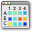
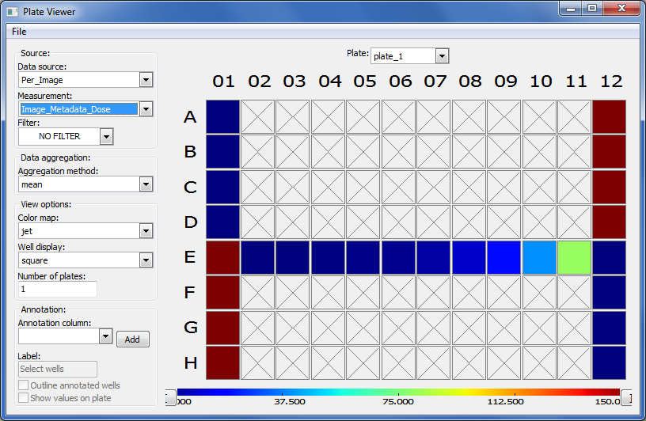
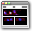
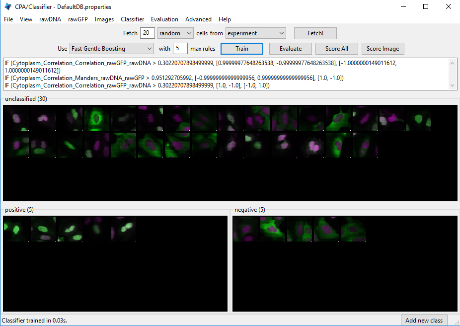
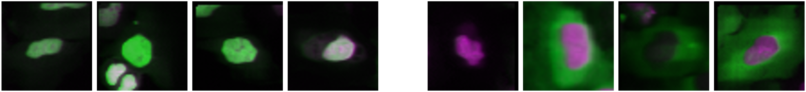
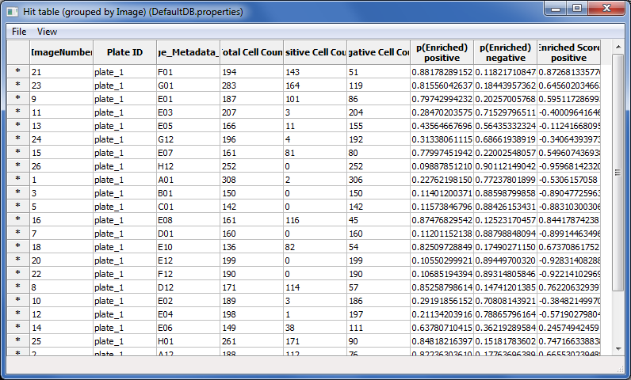
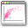

Day 2: Classification with CellProfiler Analyst#
Lab authors: Beth Cimini, Carolina Wählby, Martin Simonsson, Megan Rokop, Mark Bray and Erin Weisbart.
Learning Objectives#
Run a completed CellProfiler pipeline to get measurements from images
Load measurements into CellProfiler Analyst and explore some of its features
Perform classical machine learning to build a classifier in CellProfiler Analyst
Preparation#
Prior to this exercise, you should have downloaded CellProfiler Analyst and the Translocation image set.
This exercise builds on what you have learned in the Beginning Segmentation and Advanced Segmentation sections of the course. You should by now be familiar with basic use of CellProfiler, principles of pipeline building, and have some experience troubleshooting difficult segmentation tasks.
Background information#
Experimental overview#
In this experiment, we are working with human U2OS osteosarcoma (bone cancer) cells, in which a Forkhead-protein FOXO1A has been labeled with GFP (Green Fluorescent Protein). In proliferating cells, FOXO1A is localized in the cytoplasm; it is constantly moving into the nucleus, but is transported out again by export proteins. Upon inhibition of nuclear export, FOXO1A accumulates in the nucleus. We know that 150nM of Wortmannin (the drug we are using as a positive control in this experiment) inhibits transport of the FOXO1A protein from the nucleus back out to the cytoplasm (Fig. 1). Labeling FOXO1A with GFP allows us to visualize its subcellular localization. In this exercise, we wanted to characterize our positive control by determining the lowest possible dose of Wortmannin necessary to observe the nuclear accumulation of FOXO1A. The big-picture goal of developing image-based screens of this type is to aid in the search for unknown drugs that have the same effect as Wortmannin on FOXO1A subcellular localization (and hence may be possible treatments for osteosarcoma patients), but possess fewer side effects than the known drugs.

Figure 1: Examples of FOXO1A-GFP localization. Left: Cytoplasmic localization in untreated cells. Right: Nuclear localization in Wortmannin treated cells.
Green: GFP, Magenta: DNA.#
Images#
The images you will be analyzing were taken from an actual experimental dataset. Cells were grown in a standard 96-well plate, but for this exercise you will work with a subset of only 26 of these images.
8 wells were untreated (and therefore are negative controls)
8 wells were treated with the maximum dose of the drug Wortmannin (and therefore are positive controls)
10 wells were used to create a dose gradient with increasing concentrations of Wortmannin
In addition to these images, a text file with metadata called Translocation_doses_and_controls.csv is provided, containing information about where on the 96-well plate the wells were located, and how the cells were treated.
Exercise Overview#
In this exercise, you will use CellProfiler to load a provided pipeline and run through the pipeline in test mode so you can see what is happening in the pipeline. You will then run the pipeline on all the images in the experiment, collect measurements from each cell, and store them in a database. At this point, you will use CellProfiler Analyst to visualize your data, and use its machine learning tool to train a classifier to distinguish between treated and untreated cells. You will use this classifier to answer the question of what is the lowest possible dose of Wortmannin that causes a FOXO1A localization phenotype.
Exercise I: Using CellProfiler to identify features and obtain measurements from cellular images#
1. Start CellProfiler and configure the input data for analysis#
Load the
Translocation.cppipepipeline by dragging and dropping it into the pipeline pannel or byFile>Import>Pipeline from file.Load the images into the pipeline. From File Explorer (Windows) or Finder (Mac), drag and drop the
TranslocationDatafolder into this panel. Double-click onBBBC013_A01_s1_w1.tifandBBBC013_A12_s1_w1.tifto see what examples of negative and positive GFP controls look like, respectively.Scroll to the bottom of the File list and note that in addition to the image files, there is a file called
Translocation_doses_and_controls.csv. We only want image files to be analyzed in CellProfiler so we need to tell CellProfiler to ignore this file. Below the file list, selectImages onlyfrom the Filter Images dropdown menu. Click on the button to filter out non-image files. You will see that the CSV file is then grayed-out in the list, indicating that it will not be read in as an image file.Click on the Metadata module, which is the second module in the Input module panel. The pipeline already has the Metadata module configured to use Regular Expressions (RegEx) to extract metadata from the image file names.
You need to tell CellProfiler how to find the additional metadata in the
Translocation_doses_and_controls.csvfile. (CellProfiler is looking in theDefault Input Folderwhich is probably not where the file is.) Click the file selection box next to “Metadata file name” line and navigate to the location of theTranslocationDatafolder on your computer, then select theTranslocation_doses_and_controls.csvfile within. PressUpdate. You should now see images and metadata populating the Metadata window.If you examine the metadata matching, you can see that
Wellis selected from both drop-downs underCSV MetadataandImage Metadata. This indicates that the information stored in the .csv’sWellcolumn should be matched to theWellmetadata values obtained from the filename in the first extraction step.Next to the setting labeled
Metadata data type, make sureChoose for eachis selected from the drop-down. For theDosemetadata, selectFloatas the data type. (This tells CellProfiler to treat it as a number and is necessary for CellProfiler Analyst to handle the data correctly later.) Leave the remaining metadata at the defaultTextvalues.Click on the NamesAndTypes module. Note how the images are assigned to channels: images containing “w1” in their file name are assigned to the name “rawGFP”, while those with “w2” are assigned “rawDNA”. Click the
Updatebutton below the divider to display a table that shows each channel pair matched up for the 26 wells in the assay.
{kind=link}
{kind=link}
2. Walk through the CellProfiler pipeline#
Click the button to the bottom-left of the CellProfiler interface. You will see icons appear next to the modules in the pipeline, as well as new buttons appear below the modules.
Click on the
 button below the pipeline panel, in order to progress through each module in the pipeline, one by one. We have tuned this pipeline for you so that it will work well with the images provided, but any time you run a new pipeline and/or a new set of imagees you should step through the pipeline to make sure it is doing what you expect it to do!
button below the pipeline panel, in order to progress through each module in the pipeline, one by one. We have tuned this pipeline for you so that it will work well with the images provided, but any time you run a new pipeline and/or a new set of imagees you should step through the pipeline to make sure it is doing what you expect it to do!
{kind=link}
{kind=link}
Because we know something about the biology we are trying to capture, we have designed the pipeline to extract specific measurements that we think will help us understand the effect of the drug treatment on FOXO1A-GFP localization. Intensity metrics tell us where the FOXO1A-GFP fluorescence is in the cell. Colocalization metrics are another way of exploring localization; if the FOXO1A-GFP protein is not translocated, the intensity correlation between FOXO1A-GFP and DNA signals in then nucleus would be expected to be negative, whereas upon translocation, the correlation would be positive. Finally, we will calculate a ratio of GFP intensity in the nucleus to GFP intensity in the cytoplasm, which should increase upon translocation of FOXO1A-GFP to the nucleus.
IdentifyPrimaryObjects: Identifies the nuclei in the DNA channel
IdentifySecondaryObjects: Defines the cell body as a region 10 pixels larger than the nucleus. We did this because not all cells have strong GFP signal, so we cannot rely on intensity-based methods to define the cell boundary. (We used
Distance - Nmethod inIdentifySecondaryObjectsmodule which doesn’t actually consider the input image so we could have usedExpandOrShrinkObjectsmodule instead.)IdentifyTertiaryObjects: Defines the cytoplasm as the region between the nucleus and the cell body.
MeasureObjectIntensity: Measures the intensity of GFP in the nucleus and cytoplasm. (Remember the Test Mode display window shows a summary of the measurements collected in the image but under the hood single cell measurements are being collected and will be saved out at the end.)
MeasureColocalization: Measures correlation metrics for GFP and DNA intensities within the nucleus and cytoplasm.
CalculateMath: Calculates the ratio of mean GFP intensity in the nucleus to mean GFP intensity in the cytoplasm and creates a new feature called
IntensityRatio.GrayToColor: Creates a color image for visualization purposes.
OverlayOutlines: Overlays the outlines of the nuclei and cell bodies on the color image for visualization purposes.
SaveImages: Saves the overlay image created in the previous step. These can be helpful to return to after running a pipeline to verify that segmentation was successful. (You can deselect this module if you do not wish to save these images.)
ExportToDatabase: Saves all the measurements collected to a database for later analysis in CellProfiler Analyst.
3. Run the CellProfiler pipeline#
Exit Test Mode by clicking the
Exit Test Modebutton at the bottom-left of the CellProfiler interface.Click the
Output settingsbutton and set yourDefault Output Folderto a folder that is findable on your computer (e.g. your Desktop).Select
Windowsin the menu bar and selectHide all windows on run. Because the pipeline is optimized, we no longer need to see the results. Additionally, the analysis will be quicker this way, since CellProfiler does not have to take the time to create and draw each window.Save your pipeline by selecting
File>Save Project As…, give the pipeline a name and save it to your Desktop.Click
Analyze Images. The pipeline will run on all 26 images. This full run may take a few minutes.
Exercise II: Using CellProfiler Analyst to visualize the data and classify the cells exposed to each drug condition by their phenotype (FOXO1A-GFP subcellular localization)#
1. Start CellProfiler Analyst and load the measurement database#
Start CellProfiler Analyst by double-clicking the icon on the desktop .
When CPA is started, it will ask to select a properties file. Select the properties file named
DefaultDB.properties, located in CellProfiler’s Default Output Folder. The properties file was created by the ExportToDatabase module in your CellProfiler pipeline. This file is a text file that contains the settings necessary for CPA to connect to the database that CellProfiler generated. (It contains the measurement data obtained from all 26 images, and pointers to the location of those images on your hard drive. If you move the database file, you’ll need to edit the properties file to point to the new database location.)
{kind=link}
2. Visualize the measurements in a 96-well plate layout view#
CPA has several tools available for displaying data for exploration. If your data came from a multi-well plate, such as the 96-well plate for this particular translocation assay, then one of the most useful data visualization tools available is the plate layout format.
Click on the
Plate Viewericon in the main CPA window (
, 3rd from the left). This selection brings up a 96-well formatted display of the plate from which your images originated. The colored squares represent wells for which measurement data is present; crossed-out wells indicate wells with no measurements. Notice that 26 out of the 96 wells have data associated with them. Mouse over a few of the wells to see atool-tipbox appear, which states the actual per-well value.The initial color coding represents the image index, a bookkeeping measurement which is not relevant for the analysis that we are doing in this exercise. Under the Measurements drop-down list, choose
Image_Metadata_Dosefrom the list, in order to visualize the drug concentrations added to each well. You should see:Column 1, rows A-D, column 12, rows E-H and well E02: Negative controls, i.e. no drug added
Column 1, rows E-H and column 12, rows A-D: Positive controls, i.e. 150 nM Wortmannin
Row E, columns 2-11: Nine doses of 2-fold dilutions of Wortmannin, increasing from left to right
{kind=link}
{kind=link}

Figure 6: The Plate Viewer visualization tool illustrating the drug dosages applied to the plate.#
Select
Image_Count_Nucleifrom the Measurement drop-down to show the nuclei count for each image.Per-object measurements can also be displayed using this tool. Select
Per-objectas the Data Source, andCytoplasm_Math_IntensityRatioas the Measurement. Since each well can display only one value, but there are multiple objects per well, thePlate Viewerdisplays an aggregate statistic of the per-object measurements for each well. (Note that you can change the statistic used, at this step, by selecting it from theAggregation methoddrop-down in theData aggregationpanel.)Image thumbnails can also be shown in the viewer. To do this, under
Well displayin theView optionspanel, selectthumbnail.The colored well squares will be replaced with merged color thumbnails of the original images.In order to see that the original images are linked to the well display, you should right-click on a well and select the image number corresponding to the image of interest, in order to display the full image. (Note that the default color for each channel can be changed by selecting the desired colors in the menu bar; any changes will be applied to subsequent images that you open.)
Lastly, view the thumbnail montages by right-clicking on a well and selecting
Show thumbnail montagefrom the resulting pop-up. Move the thumbnail by dragging the bar on top of the image. Click on the thumbnail image to dismiss it from view. (Note that, if there had been multiple snapshots of multiple fields of view for each well in the plate, then the montage would be shown as a tiled display.)Do not close the
Plate Viewertool, as you will be referring to it later in the exercise.
2. Using the Classifier function of CPA to distinguish the cells` FOXO1A-GFP subcellular localization phenotypes#
CellProfiler Analyst contains a machine-learning classification tool, which will allow you to distinguish different phenotypes automatically.
In this case, we will train the classifier to recognize cells in which FOXO1A-GFP is located exclusively in the nucleus (positives) versus
outside the nucleus (negatives) by sorting examples of each into bins.
Select the Classifier icon in the main CPA window (

, 2nd on left). The Classifier interface will appear, similar to that shown in the top of Fig. 7.Click on the
Fetch!button, which instructs CPA to display pictures of a specified number (e.g. 20) of randomly selected cells from this experiment. You will see the middleunclassifiedpanel start to be populated with thumbnail images of these randomly selected cells. Because the cell images that are provided to you are a random sampling of the data this portion of the exercise will not look exactly the same from user to user.Use your mouse to drag & drop whichever cells you consider clearly positive (i.e. FOXO1A-GFP located exclusively in the nucleus) into the
positivebin. See the bottom-left panel of Fig. 7 for examples of positive cells. A small dot is displayed in the center of each thumbnail image as your mouse hovers over it. The cell that falls under this dot is the cell todrag & dropwhich will be used for classification. You can also select cells in the unclassified bin using the arrow keys and assign them to bins with the number keys. e.g. Pressing ‘1’ would send any selected cells to the first bin (‘positive’ here).
{kind=link}
{kind=link}

{kind=link}

Examples of positive cells Examples of negative cells#
Figure 7: Top: The Classifier interface showing 5 positive and 5 negative cells. Thirty unclassified cells remain and are ready for sorting. Bottom: *Examples of positive cells (left) and negative cells (right).
Now drag & drop whichever cells you consider clearly negative (i.e. FOXO1A-GFP located exclusively in the cytoplasm) into the
negativebin. See the bottom-right panel of Fig. 7 for examples of negative cells.Once you have at least 5 cells in the positive bin and 5 cells in the negative bin, change the classifier from
Random ForesttoFast Gentle Boostingand click theTrain Classifierbutton. If you did not receive 5 clearly positive & 5 clearly negative cells, in the first batch of 20 randomly selected cells you received, then hit theFetch!button again, until you receive enough cells to be able to put 5 in each bin. This set of positive and negative cells you have assembled is the training set.
3. Reviewing the rules that CPA established (based on your training set) to classify positive and negative cells#
The classification rules you will examine below are CPA’s way of defining the measurements (and the cutoff values the measurements need to have) in order to distinguish the positive from the negative phenotypes.
Read the text that is now located in the text box in the upper half of the Classifier window. This text contains the rules CPA found based on the training set you provided to it. (Note that rule displays aren’t available with all classifier types.)
Each rule is in the form an
IFstatement evaluating whether a measurement is greater than some value.The closer to the top of the list a measurement appears, the more significant it is in distinguishing the phenotypes.
Questions to consider:
(1) What is the top-most measurement that shows up in your classification rules?
(2) Is the top-most measurement one that you would expect to be the most significant one to use in distinguishing the phenotypes?\
4. Reviewing the accuracy of the classification with the confusion matrix#
Confusion matrix visualization is currently broken in CPA, but if it was working, this would be a great time visualize how confident CPA is in its categorization by examining a confusion matrix.
5. Refining the training set by sorting more unclassified cells into the positive and negative bins#
At this point, it is important to keep in mind that the CPA Classifier tool will pick whichever measurement is most significant in making its
determination of positive versus negative (whether or not that measurement is biologically relevant). For example, at this point (after only sorting 5 positive & 5 negative cells), you may notice measurements called Object_Number (the object number of each cell) or Nuclei_Location_Center (the cell position in the image) included in the classification rules. This indicates that the classifier is not well-trained, since these measurements are not actually correlated with the phenotype we want to find. Whenever you find that the classifier is not well-trained, you need to either add more cells to the training set, or obtain more measurements from the cells (in CellProfiler).
Obtaining samples from positive and negative control wells:
Sometimes the phenotype of interest is uncommon enough, that fetching 20 random images will not result in the retrieval of many clear examples of the phenotype you are looking for. However, if you know which images contain examples of the phenotype, you can open the image - either by double-clicking a cell thumbnail, or
from the Plate Viewer (if you know the location of the well). You can then drag-and-drop the cells of interest directly from the image.
Open the
Plate Viewerand double-click on well A01, in order to open an image from the negative controls.Click on a cell in the image that is negative for the phenotype and drag-and-drop it into the negative bin. Repeat this for 5 negative cells.
Repeat the above two steps for A12 (a well containing a positive control sample), dropping the cells into the positive bin. Do this for 5 positive cells.
Click the
Train classifierbutton.
Correcting misclassified cells in an image: You may also apply the rules to all the identified cells in an image, and use it to correct misclassifications.
Double-click any of cell thumbnails in the positive or negative bins.
From the image that opens, click
Classifyfrom the menu, thenClassify Image. The cells will be color-coded according to their classification based on the current rule.Click the
Show controls >>button at the bottom to reveal the total counts of each class on the image. On Windows computers this will also show which color corresponds to which class. On Macs, selectViewfrom the image menu, and then selectView cell classes as numbers.Then, to see what each number means, click theShow controls >>button at the bottom to reveal the numbered class list.Look for up to 5 cells that are clearly misclassified. For each of these cells that you find, click on it and drag-and-drop it into theappropriate bin.
Click the
Train classifierbutton.
Fetching positive and negative cells:
You now have your initial training set, and the rules that define the computers first attempt at distinguishing the phenotype. Therefore you can now request that the computer fetch more examples of positive and negative cells. These new sample cells can be added to the corresponding bins, in order to improve the classifiers performance.
Change the number next to the word
Fetchfrom20to5. Click on the drop-down box labeledrandomin the fetch controls. Selectpositivefrom the drop-down list.Click the
Fetch!button to retrieve samples of what the computer thinks are positive cells based on the current set of rules. If the cells are correctly fetched (true positives), drag and drop them into the positive bin. If negative cells are incorrectly fetched (false positives), drag and drop them into the negative bin. As with previous steps, if you are not sure about which bin a cell belongs to, do not add it to the training set. Instead, click to select these ambiguous cells, and then press theDeletekey to remove them from the training.Repeat this step until you have at least 20 cells in each bin.
Exploring the retraining:
Click the
Train classifierbuttonQuestions to consider:
(1) What is the top-most rule that shows up in your classification rules?
(2) Is the top-most rule a measurement that you would expect to be the most significant one to use, in distinguishing the phenotypes?
Whatever approach you choose to obtain more positive and negative cells, the procedure is the same: (i) Find rules; (ii) Obtain more cell samples of the desired phenotype; (iii) Correct misclassifications, or sort into appropriate bins; (iv) Go back to the first step and repeat, until the classifier displays the desired level of accuracy.
6. Classifying all cells in the experiment#
Once the classifier is of the desired accuracy, it is ready to be applied to the complete image data set.
Press the
Score allbutton. A dialog box will appear with scoring options; clickOKto accept the default settings and begin scoring. Every cell in every image will now be scored as positive or negative by the classifier you built. AHit tablewindow will appear containing the summarized scores for every image (Fig. 9). The total cell count is reported, as well as the number of positive and negative cells classified. The last column is the enrichment score.Click on the column header labeled
Enriched Score positive.(You can resize the hit table window, if this column is not visible). Clicking this header will sort the rows in ascending or descending order, according to the enrichment scores. Sort the column values so the order is descending, with the highest score at top.Double-click on the asterisk in the first row to the left of the first column (
ImageNumber) to display the corresponding image for the top-scoring well.
{kind=link}

Figure 9: Hit table showing the cell counts and enrichment scores.#
You can also save your training set and/or classifer model for future reference or to make changes later. Do so by going to File > Save Training Set or File > Save Classifier Model.
7. Saving the scores to the measurement database for visualization#
Now that we have successfully scored our experiment, we will save the scores back to the measurement database, so that they can be visualized using CPA`s tools.
Select the
Hit tablewindow and clickFilefrom the menu, thenSave table to database.When prompted for a name, enterHitTable. Selectsave permanentlywhen prompted.Select
Plate Viewerfrom the CPA interface, then chooseOTHER TABLEfromData source.When prompted to select a table, choose
HitTable.At the next prompt, select
per-wellas the table type. Then select the matching columns in order to link the table of hits to the table of image measurements, by doing the following:On the first row, choose
PlateIDon the left to matchImage_Metadata_Plateon the right.On the second row, choose
Image_Metadata_Wellon the left to matchImage_Metadata_Wellon the right.
Open a new
Plate Viewertool from the main CPA window. On thePlate Viewer, selectEnriched_positivefrom theMeasurementdrop-down list in order to view the enrichment scores in the plate layout.Refer to the previous
Plate Viewerdisplay ofImage_Metadata_Dosefrom section 2A. Consider the following questions:
(1) How well does the layout of theEnriched_positivevalues match the layout of the (i) positive and negative control wells and (ii) the 9-point dose wells ofImage_Metadata_Dose?
(2) What does the amount of correspondence tell you about the classifier you trained?
8. Plotting the scoring results to estimate the lowest dose necessary to induce FOX1O-GFP translocation#
You can use additional data tools in CPA to visualize your data in other ways. In this case, we will use a scatter plot to plot a dose-response curve. This will allow us to see how the ratio of positive cells (i.e. cells with GFP in the nucleus) increases with Wortmannin dose.
Click the
Scatter Ploticon in the main CPA window
(4th from left).From the
x-axisrow, selectPer_imageandImage_Metadata_Dosefrom the drop-down lists. Chooselogfrom theScaledrop-down.From the
y-axisrow, selectHitTableandEnriched_positivefrom the drop-down-lists.Click the
Update chartbutton to see the scatter plot. NOTE: due to a bug in CPA, if you have plotted the graph once inlinearscale mode and then try to switch tologscale an error will be thrown. If you want to look at both, open two separate scatter plots.What is the enrichment score (
Enriched_positive) that corresponds to the highest dose (Image_Metadata_Dose) in the experiment? (There are several points corresponding to the highest dose, so estimate the average enrichment score.) What is the lowest dose that produces an enrichment score similar to that of the maximum dose?
{kind=link}
9. Exporting your classifier for use in a CellProfiler pipeline#
Head back to the Classifier tool. Export a .model file which stores the trained classifier for use in other software with File -> Save Classifier Model.
Within CellProfiler 4+, the
ClassifyObjectsandFilterObjectsmodules can load these model files and use them to assign objects to classes during the pipeline itself. This allows you to classify new data sets without needing to train in CellProfiler Analyst again. (Note that to use model files in CellProfiler, the pipeline needs to produce the same measurements that were present in your CPA database during training. These measurements must be captured before the module which will use your model.)